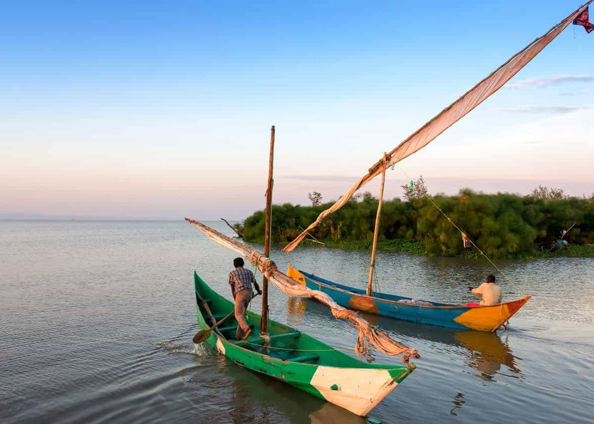
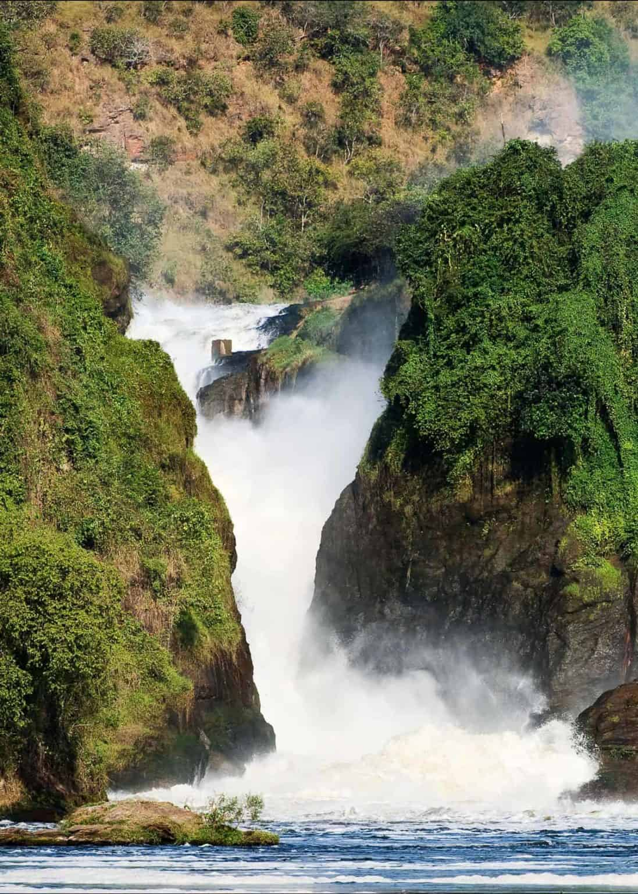

Tourism is the act and process of spending time away from home in pursuit of recreation, relaxation, and pleasure, while making use of the commercial provision of services1. It involves people traveling to a particular destination to either relax and enjoy the different climate, explore new scenery or learn more about the culture in the area2. Tourism is very good for the economy, and it helps bring lots of money to different destinations each year2.
Examples of tourist attractions places in uganda
Lake Victoria
If you really want to experience the heart of Uganda, the story begins with Lake Victoria, which is the birthplace of the Nile River.
Not only is it Africa’s largest lake and the world’s largest tropical lake, but Lake Victoria also boasts one of the world’s largest ecosystems.

Murchision falls
Whether you visit by boat cruise on the Victoria Nile or a safari tour, you don’t want to miss Murchison Falls in northwest Uganda.
Here, you can witness enormous waters bursting through a narrow gorge before crashing in powerful, roaring cascades.
While you are visiting this breathtaking sight, you may also want to explore the surrounding protected area that makes up Murchison Falls Conservative Area to spot some of Africa’s icons such as African lions, elephants, leopards, giraffes, buffalo and more.

Bwindi impenetrable nation game park
Breathtaking mountain views, lush landscapes and an abundance of African wildlife are just a few reasons Bwindi Impenetrable National Park is one of the top places to visit in Uganda. Moreover, it is home to some of the world’s last mountain gorillas.
There are many gorilla trekking tours you can join here to suit your level of skill or preference that will allow you to experience the sheer beauty of this place and to see mountain gorillas up close in their natural habitat.
.jpeg)